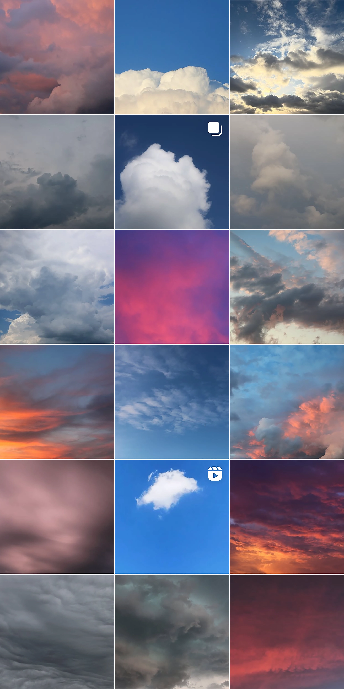
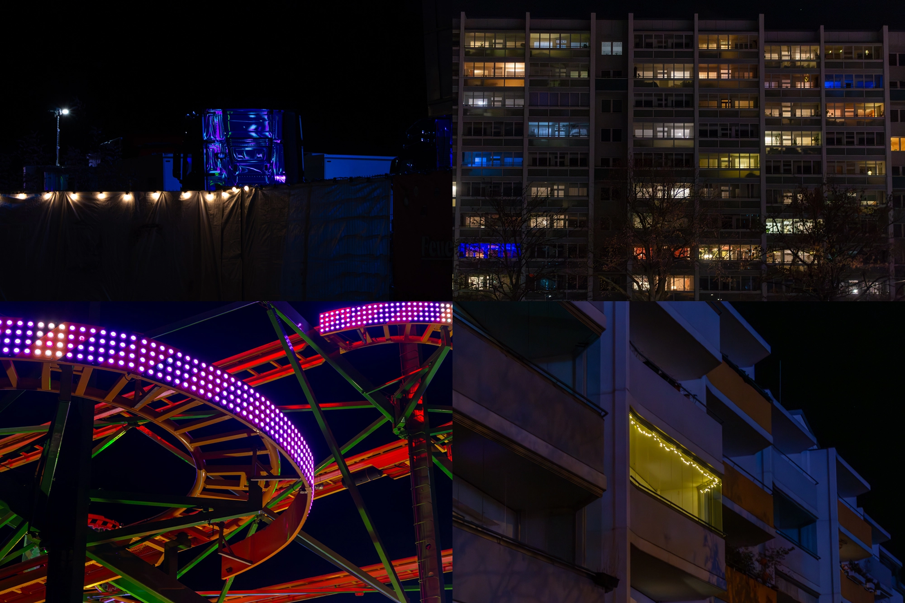

Fotografie
Eines meiner Hobbies ist es, Fotos zu machen. Mein liebstes Motiv sind natürlich Wolken. Folgend seht ihr einen aktuellen Screenshots meines "Instagrids", sowie nachfolgend eine kleine Auswahl von Bildern, die im Rahmen des "Fotografie & Bildbearbeitung in Adobe Lightroom"-Unterrichts entstanden sind.
Diese stellen zwar augenscheinlich einen großen Kontrast zu den doch eher hellen & "leichteren" Wolkenbildern her - für mich aber eint sie eines ganz besonders: meine Liebe für Licht, in all seinen Farben.

